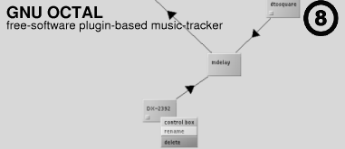

|  |
| Screenshots --- Download --- Discuss --- OX_API Documentation --- Links |
|
25 February 2001. Minor update 0.92.2beta is at the download site. 24 February 2001. Developer's Beta 0.92 out. There is a developer's beta release at GNU ftp. GNU is moving its ftp server in the next few weeks, so please bear with me if you have trouble accessing it. (Here is an alternative location.) 25 January 2001. Update. The GUI is working. The system is now a multithreaded program with message passing going back and forth between the audio core and the GUI shell. There will be a release of this code as soon as a few more things are hooked up that allow interactive playing-around. For screenshots, please visit my auxiliary octal page where I keep random recent tidbits. I suspect we're only about a month away from the official beta phase. Purpose GNU OCTAL is a tracking-audio workstation for gnu/linux and other unix systems. It is designed as a tool for electronic musicians who wish to achieve high-quality sound in a tracker environment. Why tracking? It's fun, it works, and with modern computing power at our disposal, it produces professional results. Best of all, it requires no special hardware. Structure The OCTAL system adapts some well-established ideas from music systems programming, while retaining tracker style:
Project Organization and Tools This project may sound ambitious, but in truth, the different parts of the system have all been done before. Matrix-based (or "tracking style") sequencing has been around for years; Unit Generators date back to 1960. The design of the OCTAL system is geared toward simplicity and providing solid functionality, rather than packing in everything but the kitchen sink. None of the ideas listed above are particularly complex or difficult to implement--but as users of tracking software will tell you, you can do quite a bit with some simple but powerful tools. Project founder David O'Toole(dto@gnu.org) will direct system architecture and develop the core code. A number of audio developers have expressed interest in developing free audio plugin programs for OCTAL. If you are interested in developing free audio plugins or becoming a user of GNU OCTAL, you may want to join the octal mailing list (click the "Discuss" link at the top of the page.) Feel free to stop by #octal at irc.gimp.net or email me at dto@gnu.org. The standard gnu development suite will be used to build the OCTAL project components, using C. OCTAL will be released under the GNU General Public License. © 1999, 2000 by David O'Toole (dto@gnu.org) Verbatim copying and distribution of this entire article is permitted in any medium, provided this notice is preserved. Return to GNU's home page. Please send FSF & GNU inquiries & questions to gnu@gnu.org. There are also other ways to contact the FSF. Please send comments on these web pages to webmasters@gnu.org, send other questions to gnu@gnu.org. Copyright notice above. Free Software Foundation, Inc., 59 Temple Place - Suite 330, Boston, MA 02111, USA. |